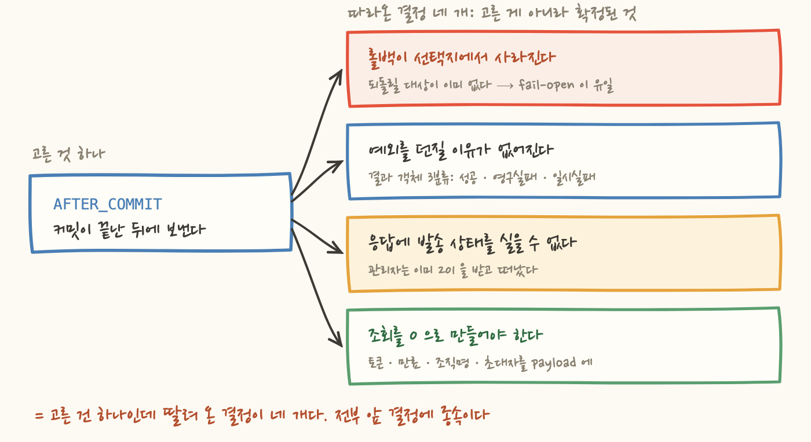
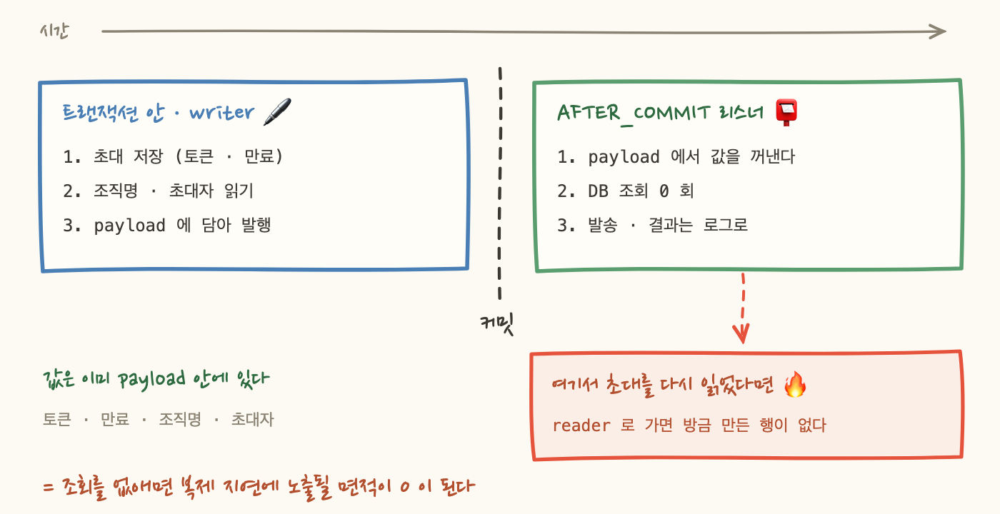

초대 메일을 붙이는 작업이었어요. 관리자가 멤버를 초대하면 수락 링크가 담긴 메일이 자동으로 나가는, 어디에나 있는 기능입니다. 그전까지는 초대 API 응답에 토큰이 평문으로 실려 나왔고, 관리자가 그걸 복사해서 사람에게 직접 전달하고 있었습니다. 메일만 얹으면 되는 일이라고 생각했어요.
설계 문서를 쓰면서 옵션 표를 여덟 개 그렸는데, 이 글에서 따라갈 결정은 그중 하나예요. 발송을 트랜잭션 안에서 할 것인가, 커밋이 끝난 뒤에 할 것인가. 커밋 이후(AFTER_COMMIT)를 골랐고요. 그러고 나서 나머지 표를 채우다가 이상한 걸 발견했습니다. 몇몇 표는 이미 답이 정해져 있었어요. 옵션 B 칸에 제가 적고 있던 문장은 "이건 나쁘다"가 아니라 "이건 구조적으로 불가능하다" 였거든요.
그러니까 오늘 글의 질문은 이겁니다. 결정 하나가 어떻게 뒤따르는 결정 네 개를 자동으로 확정해버리는가.
트랜잭션 안에서 메일을 보내면 코드가 제일 단순해요. 초대를 저장한 다음 줄에서 그냥 보내면 되니까요. 대신 두 가지가 깨집니다. 하나, 롤백돼도 메일은 이미 나가 있어요. 존재하지 않는 초대의 수락 링크가 남의 메일함에 도착합니다. 둘, SMTP 왕복이 트랜잭션과 DB 커넥션을 붙잡아요. 메일 서버가 느린 날엔 커넥션 풀이 메일 서버 속도로 묶입니다.
세 번째 선택지인 아웃박스 테이블도 검토했는데, 이 저장소엔 아웃박스 인프라가 아직 없어요. 초대 메일 하나 때문에 테이블·폴러·분산 락을 신설하는 건 과했습니다. 그래서 남은 게 커밋 후 발송이에요. 스프링에서는 @TransactionalEventListener(AFTER_COMMIT) 한 줄이고요.
여기까지는 평범한 트레이드오프였어요. 얻는 것은 "커밋된 초대만 발송된다"와 "트랜잭션이 외부 I/O 를 잡지 않는다" 였어요. 잃는 것은 "발송이 그 인스턴스에서만 실행되므로, 보내기 전에 인스턴스가 내려가면 메일이 유실된다" 였고요. 유실은 재발송 API 로 보상하기로 했습니다. 이상한 건 이 표가 아니라 그다음 표들이었습니다.

다음 표의 제목은 "발송 실패 시 초대의 운명"이었어요. 옵션은 둘이었어요. A 는 초대를 그대로 두고 발송 실패만 기록하는 fail-open, B 는 발송이 실패하면 초대까지 롤백하는 fail-closed.
표를 다 채우고 나니 B 행의 "되돌리기 비용" 칸이 비어 있더라고요. 뭘 적어야 할지 몰라서가 아니라, 적을 게 없어서요. 커밋 후 발송을 고른 순간 롤백할 트랜잭션 자체가 없어졌으니까요. 그 칸에 결국 이렇게 적었습니다. "구조적으로 불가능하다. A 를 택한 순간 B 는 선택지가 아니다."
옵션 표를 그렸는데 고를 게 하나뿐이면, 그건 결정이 아니라 앞선 결정의 결과예요. 그리고 이건 표를 잘못 그린 게 아니에요. 오히려 표를 그렸기 때문에 "이 자유는 아까 이미 내줬구나"를 알아챌 수 있었죠.
보통 실패는 예외로 알립니다. 예외가 하는 일은 두 가지입니다. 트랜잭션을 롤백시키는 것, 그리고 호출자에게 실패를 전달하는 것이죠.
커밋 후 리스너에서는 둘 다 안 됩니다. 롤백은 이미 늦었고요. 호출자도 없어요. 커밋 후 리스너를 부르는 건 컨트롤러가 아니라 트랜잭션 동기화 콜백이라서, 여기서 던진 예외는 원래 요청의 응답에 닿지 않고 리스너 실행 흐름만 끊습니다. 예외를 던지면 아무것도 되돌리지 못한 채 스택 트레이스만 하나 늘어나요.
그래서 발송 어댑터를 예외 대신 결과 객체를 반환하는 형태로 만들었어요. 성공 / 영구 실패 / 일시 실패, 세 갈래입니다.
3분류인 이유는 단순해요. 재시도해도 결과가 같은 실패(자격증명이 틀렸다, 주소 형식이 깨졌다)와 재시도하면 살아날 수 있는 실패(연결이 끊겼다, 타임아웃이 났다)를 섞어버리면, 호출부는 무의미한 재시도를 하거나 살릴 수 있는 발송을 버립니다. 실패를 한 덩어리로 다루면 실패에 대응할 수가 없어요.
참고로 리스너에도 try/catch 를 한 겹 더 뒀어요. 어댑터가 결과 객체를 돌려주기로 약속했어도 예상 못 한 런타임 예외는 생길 수 있는데, 그게 밖으로 나가봐야 이득이 하나도 없거든요. 안전망을 두 겹으로 만든 게 아니라, 바깥에 던져도 받을 사람이 없어서 안 던지는 겁니다.
이건 나중에 반드시 하고 싶어지는 일이에요. 초대 API 응답에 "mailSent": true 같은 필드를 하나 넣어서 관리자 화면에 "발송 완료"를 띄우는 거요. 요구사항으로 올라오기도 딱 좋고요.
그런데 시간 순서를 보면 불가능합니다. 응답은 커밋 시점에 확정되고, 발송은 그 뒤에 일어나요. 굳이 실으려면 리스너를 기다리게 만들어야 하는데, 그건 커밋 후 발송을 무르고 트랜잭션 안 발송으로 돌아가는 것과 같습니다. 롤백돼도 메일이 나가는 그 세계로요.
그래서 설계 문서에 이렇게 적었어요. "응답에 발송 상태를 싣지 않는다(거짓 확신 방지)." 발송 결과는 오직 로그·메트릭·재발송 API 로만 다룹니다. 응답에 없는 필드가 게으름이 아니라 설계의 결과일 때가 있어요. 발송 여부를 모르는 채로 201 을 주는 게 불편하긴 한데, 모르면서 안다고 말하는 것보다는 낫습니다.
네 번째가 제일 조용한 함정이었어요. 리스너는 트랜잭션 밖에서 돕니다. 여기서 초대를 invitationId 로 다시 읽으면 무슨 일이 생길까요.
단일 DB 라면 아무 일도 안 생겨요. 그런데 읽기 복제본을 쓰는 순간 이야기가 달라집니다. 조회 전용처럼 보이는 이 읽기는 읽기 전용 복제본(reader)으로 라우팅될 수 있고, 커밋 직후라 복제가 아직 안 끝났으면 방금 만든 행이 거기 없어요. 그럼 리스너는 "초대를 찾을 수 없다"로 죽습니다. 평소엔 잘 되다가 부하가 올라 복제 지연이 커지는 날에만 나는, 재현이 제일 어려운 종류의 버그죠.
그래서 설계 문서의 레플리카 레그 체크리스트 8번, "쓰기 직후 그 데이터를 읽는가?" 라는 항목에 이렇게 답했어요. "읽지 않도록 설계한다." 리스너가 필요로 하는 값을 전부 이벤트 payload 에 실어서, 조회 자체를 없앴습니다.
여기서 한 겹 더 있어요. 토큰·이메일·만료는 방금 저장한 초대 객체에 들어 있지만, 조직명과 초대자 이메일은 다른 테이블에 있습니다. 그 둘을 리스너에서 읽으면 조회를 없앤 의미가 사라지죠. 그래서 payload 를 채우는 그 읽기까지 트랜잭션 안(writer)에서 끝냅니다.

덤도 하나 있었어요. payload 만으로 발송이 완결되니까, 리스너 테스트에 DB 가 필요 없어졌습니다. 이벤트 객체 하나 만들어 넣으면 끝이에요. 복제 지연을 피하려고 한 설계가 테스트 비용까지 깎아준 셈인데, 이건 우연이라기보다 "의존을 줄였으니 당연히"에 가깝겠죠.
여기까지가 파생 사슬이고, 이번엔 값을 치른 이야기예요. 설정 세 가지를 기동 실패 조건으로 만들었습니다. 발신 주소 미설정, 수락 URL 템플릿 미설정, 그리고 수락 URL 에 {token} 자리표시자가 없는 경우입니다. 셋 다 빈(bean) 생성자에서 IllegalStateException 을 던지니 앱이 아예 뜨지 않아요.
근거는 한 문장입니다. 잘못된 링크가 담긴 메일은 회수할 수 없어요. 발송 시점에 검증하면 어떻게 되는지 보세요. 초대는 정상 커밋됐고, 관리자는 201 을 받았고(4장), 롤백은 불가능하고(2장), 메일만 조용히 실패합니다. fail-open 을 골랐기 때문에 설정 오류가 런타임까지 살아남으면 아무도 모르는 사고가 돼요. fail-open 을 택한 시스템일수록 부팅 시점 검증이 중요해집니다.
대가는 즉시 청구됐어요. 기존 통합·E2E 테스트 6개가 컨텍스트 기동에 실패했습니다. 메일과 아무 상관 없는 마이그레이션 검증 테스트까지 포함해서요. 리스너는 그냥 스프링 빈이라서, 컨텍스트가 뜨는 모든 테스트에 같이 뜨거든요.
여기서 나온 조합이 재사용할 만합니다. 실 어댑터는 조건부 등록으로 프로덕션에서만 살리고, 리스너가 요구하는 포트는 테스트에서 @Primary 더블로 채웁니다.
@PostConstruct 나 생성자에 두는 순간, 그 빈을 로드하는 모든 테스트가 설정을 요구하게 되니까요. 그렇다고 검증을 발송 시점으로 미루면 fail-fast 를 포기하는 거고요. 그래서 두 개를 쌍으로 다룹니다. 실 어댑터는 조건부 등록으로 빼고, 검증이 붙은 리스너는 더블 + 프로퍼티로 채워요.
이 사슬에서 제가 실제로 고른 건 하나예요. 나머지 넷은 첫 번째 선택이 대신 내려준 결정이었고요. 그런데 설계 문서를 안 썼으면 넷 다 "그때그때 자연스럽게 그렇게 된 것"으로 보였을 거예요. 그러다 몇 달 뒤에 "응답에 발송 상태 좀 넣어주세요" 같은 요청이 오면, 왜 안 되는지 설명을 못 했겠죠.
옵션 표를 그려놓고 "이건 사실상 앞 결정에 종속된 결과다"라고 적게 되는 순간은 좋은 신호예요. 그 문장이 나왔다는 건 종속 관계를 알아챘다는 뜻이거든요. 반대로 모든 표에서 매번 자유롭게 고르고 있다면, 앞 결정이 무엇을 닫았는지 아직 안 보고 있는 걸 수도 있어요.
그래서 트레이드오프를 적는 방식도 바뀌었어요. 무엇을 얻는지만 쓰면 절반짜리 기록이에요. 무엇이 선택지에서 사라지는지를 같이 적어야 합니다. "되돌리기 비용" 칸이 "중간"이 아니라 비어 있는 결정, 즉 되돌릴 방법 자체가 없어지는 결정이 진짜 무거운 결정이고요.
대신 되돌릴 조건은 남겨둡니다. 커밋 후 발송은 메일 유실을 감수하는 선택이니까, "유실이 실제로 관측되거나 비밀번호 재설정 같은 메일이 추가되면 아웃박스를 재검토한다"를 백로그에 적어놨어요. 지금 아웃박스를 만들지 않은 게 판단이라면, 언제 그 판단을 뒤집을지도 판단의 일부니까요.